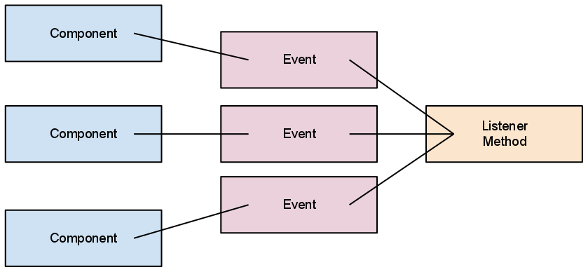

ControlP5
ControlP5 Example
Java World - Events
A special object, one that belongs to a larger system is usually referred to in the Java world as a component. These components usually have some relationship with other parts of a library that performs a certain function.
For this lesson in Events and Listeners we will be looking a the ControlP5 library, components of the library are:
Components of the ControlP5 library are called components and not objects because they are related to the rest of the library. Simply making a new ControlP5 Button is not enough to use the library.
Each component will generate events. However, these events do nothing without a proper listener.
In the Event Listener pattern we have already seen components. We also know that components generate events. But what are events and how are they used?
An event in the Java world is an instance of some event class, which usually describes the events. Event objects represent the who, what, where, when, why, and how of the event that occurred. Here is an example
Events come in all different kinds:
Creating your own event classes that can represent custom events can be extremely useful. If your application works with a lot of data input or special types of user interaction, you will probably want to look at building your own event model.
Now that we know what a Component and Event are we can talk about the crucial piece of the Event Listener pattern that must exist for anything to happen: the Listener method, commonly referred to as the Event Handler.
We've actually been using 2 (sometimes more) listeners in our sketches the entire time. Let's take a look:
void setup() { ... } //this method is an event handler
setup will listen for the event that the sketch has started
Once the event is fired, the setup method is called
void draw() { ... } //this method is an event handler
draw listens for a special timer event based on the frameRate set in your sketch
Once the event is fired, the draw method is called
void keyPressed() { ... } //this method is an event handler
keyPressed listens for an event based on any key on the keyboard being pressed
Once the event is fired, the keyPressed method is called
void mousePressed() { ... } //this method is an event handler
We know what this method does...
The Listener methods built into processing are special to the processing language, and some don't behave like a traditional Event Handler method. Normally, every Event Handler has a parameter to receive the Event that was fired. When using ControlP5 this is true. Let's see an example:
Notice the parameter to the controlEvent method is a reference variable of the type ControlEvent? This is the actual event that was generated by one of the ControlP5 components in our sketch.
When the component was interacted with, it generated an instance of ControlEvent and populated it's fields. Since the component was only a simple button, the event only knows that it was activated by a controller and has the name of that controller stored in one of it's fields.
Finally, since all the information stored in an event is Private, in order to query the ControlEvent object, we must access it's fields through public methods that will return the correct information to us.
Save your sketch somewhere.
Download controlP5 here.
Unzip the file in the libraries folder named "controlP5.jar".
Use the sketch menu, select "Add File", add "controlP5.jar" to the sketch.
Double check now that "controlP5.jar" is inside a folder named "code" in your sketch folder.
Add the following line to your sketch at the beginning:
import controlP5.*;